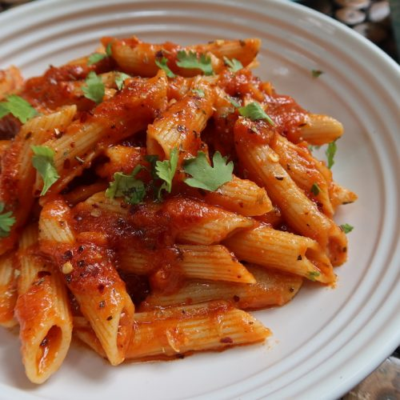

Red Sauce Pasta

Description
Red Sauce Pasta is a comforting and flavorful Italian dish made with a tomato-based sauce. It's perfect for a cozy lunch or dinner, offering a balance of tangy tomatoes, sweet onions, and fragrant herbs.
The sauce is slow-cooked with garlic and olive oil to enhance its depth, then tossed with pasta and finished with fresh basil or parmesan.
Ingredients
- Pasta (penne or spaghetti) – 200g
- Olive oil – 2 tablespoons
- Onion (chopped) – 1
- Garlic (minced) – 2 cloves
- Canned tomatoes – 400g
- Sugar – 1 teaspoon
- Salt and pepper – to taste
- Fresh basil – optional
- Grated parmesan – optional
Steps
- Boil pasta according to package instructions; drain and set aside.
- Heat olive oil in a pan and sauté onion until soft.
- Add garlic and cook for a minute.
- Pour in canned tomatoes, sugar, salt, and pepper. Simmer for 10–15 minutes.
- Toss cooked pasta in the sauce and mix well.
- Garnish with fresh basil or parmesan before serving.
- bonappetit
Home